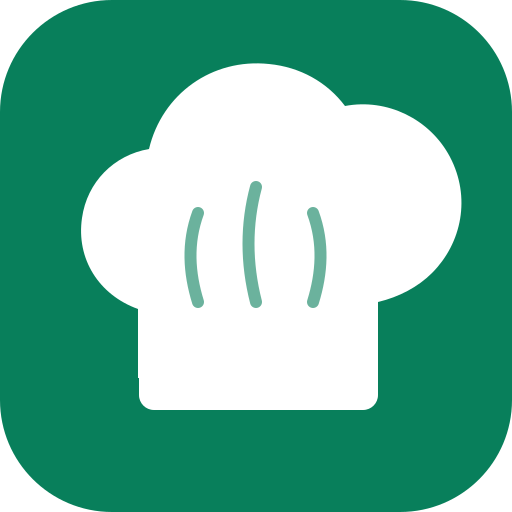

RestoManagerAssistance & administration
Bienvenue dans votre espace Créateur
Pilotez vos établissements, l’assistance et le développement de RestoManager depuis une console dédiée. Accès réservé aux administrateurs autorisés.
Administration DEV · Compte indépendant de la production.
Retour à la connexion des équipes